Computational Geometry (CSCI 716) Project: The Art Gallery Problem
Project Title:
The Art Gallery Problem
Team Members:
Akshay Sharma (acs1246)
Darshan Kavathe (dck1135)
Motivation:
The art gallery problem is a well known one which has applications in wide and interesting areas. Although it is framed as a security problem where guards vigilantly protect an art gallery, it can also be framed as an illumination problem. This transforms it into providing optimal illumination within a closed building while minimizing the number of lights being used. This issue of visibility can be used within games for level design as well - just imagine a group of non-player characters patrolling an area while the player himself has to stealthily move around or even attack them. Interestingly enough, the art gallery problem is almost directly applicable to tower defence style games where the player needs to place objects like turrets at various positions within a structure to secure it against adversaries that gradually increase in strength and speed.
Along with the above use cases, the art gallery problem also seems applicable to areas such as the design of buildings and vehicles, route planning and even circuit design. For these reasons, and because it presents such an interesting setting along with many intriguing variations, we have decided to look at this problem and hope to gain some insight into how computer scientists over the ages have chosen to tackle it, and perhaps contribute something as well.
Description:
The art gallery problem is also popularly called the museum problem. In computational geometry literature, it is also referred to as the Vertex-Pi Floodlights problem. The problem is named after the real-world problem of guarding an art gallery or a museum with as few guards as possible in such a way that the guards are collectively able to keep all parts of the museum in sight at all times. In computational geometry, the gallery is typically represented using a 'simple polygon' (a flat shape created by straight, non-intersecting sides that form a closed path in a pair-wise fashion). A set of points is said to 'guard' a portion of the polygon if, for each point 'a' inside the polygon, another point 'b' exists such that the line joining 'a' and 'b' does not have any portion outside the polygon.
As part of our project, we plan to survey the body of work surrounding this well-studied problem, arrive at the best methods available, try out our own methods of solving the problem and also look at known variations of the problem involving moving guards and polygons of varying shapes.
Ideally, we would also like to have a few implementations of the problem that can be used to run simulations of it along with showcasing possible solutions in a web application.
Timeline:
09/29 - 10/04 : Go through papers and other available materials related to the problem and its variations. Try to highlight approaches that may be of particular use.
10/05 - 10/31 : Try our own approaches to the problem and catalogue possible shortcomings with each approach. Start with implementing small versions of the problem and dive deeper into the methods used.
11/01 - 11/19 : Create the actual applications along with visualizations.
11/20 - 11/31 : Work on the final report and presentation.
Division of roles:
Akshay: Investigate triangulation and graph colouring as possible solutions. Try Threejs for visualizing the problems. Look at concave variations.
Darshan: Investigate convex partitioning and linear programming as possible solutions. Look at the mobile guards and exterior viewing scenario.
Pre-liminary Results - Triangulation and Colouring
Program to determine vertex guard positions using triangulation and 3-colouring of the given polygon
As part of a more naive approach to solve the problem for regular polygons, we implemented a program to perform triangulation and 3-colouring of a given polygon.
It displays the output polygon with diagonals drawn, colouring of the vertices and the positions of the vertex guards.
Few things to point out:
- The polygons are shown in red.
- Diagonals caused for triangulation are shown in green.
- The vertices are shown in 3 different colours - yellow, dark blue and cyan.
- The vertex guard positions are superimposed as Xs on the vertices corresponding to the found minimum vertex colour.
Some screen shots of the outputs generated by the program are displayed below along with brief descriptions:
1) This is an orthogonal polygon with axis parallel edges.
More complicated orthogonal figures might require quadrilateralization instead of triangulation, but here it seems to do the job.
Number of vertex guards found: 2.
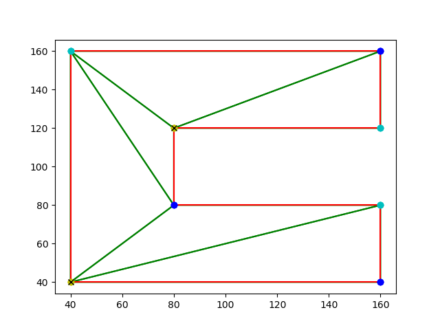
2) This is a more complicated orthogonal polygon with axis parallel edges. It is clear from looking at it that the triagulations produced are becoming more complicated now.
Number of vertex guards found: 12.
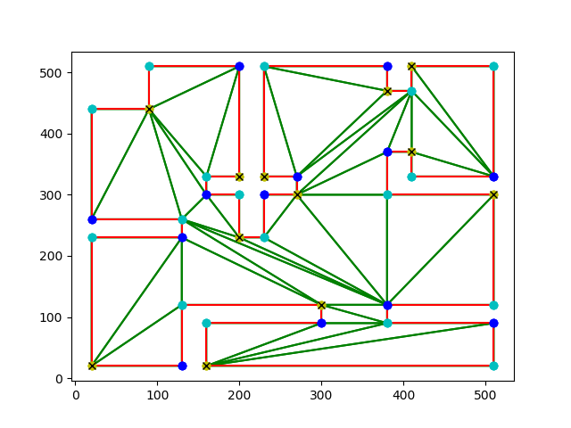
3) This is a polygon with a mixture of orthogonal and normal edges.
Number of vertex guards found: 4.
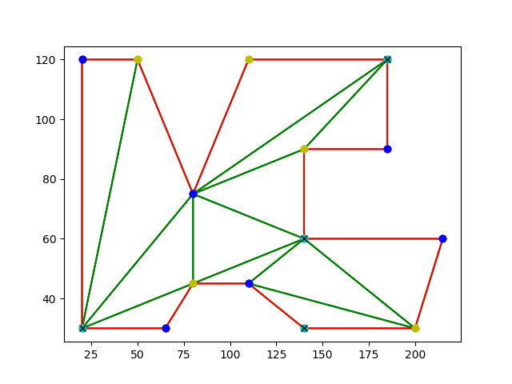
4) This is a more complicated polygon with no orthogonal edges.
Number of vertex guards found: 5.
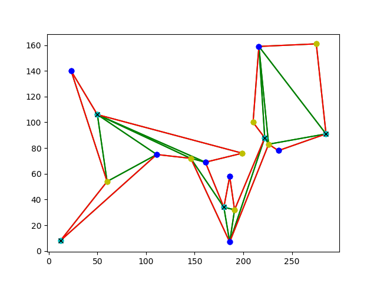
5) This is a regular pentagon.
Number of vertex guards found: 1.
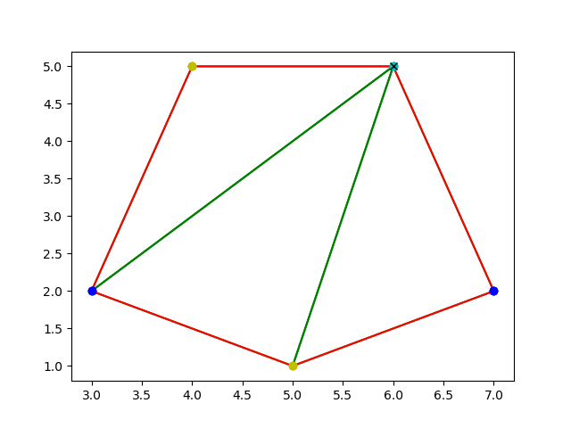
6) This is a septagon.
Number of vertex guards found: 2.
As can be clearly seen, 1 guard should have sufficed here. An art gallery shaped in this manner, would not required 2 guards.
This example shows that 3-colouring on its own can never sufficiently guarantee a good solution to the problem. Additional visibility checks are required.
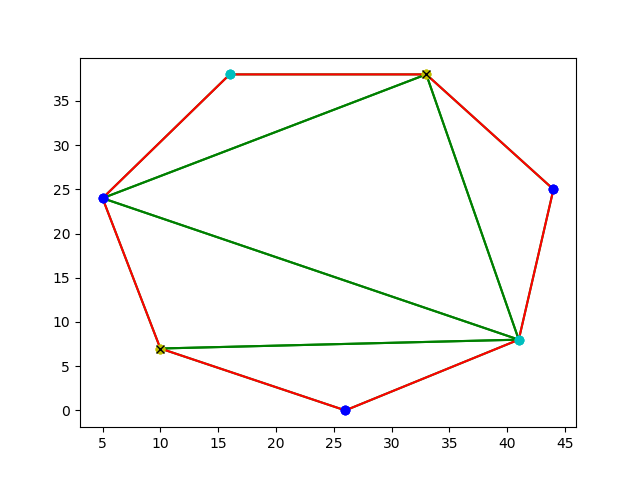
7) This is a popular example to test Art Gallery Solutions on.
Number of vertex guards found: 4.
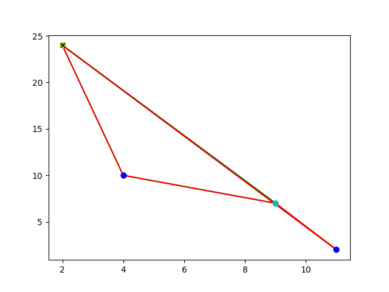
The program was written in Python 3 and all the plots shown here were obtained using the popular Matplotlib library.
Pre-liminary Results - Guard Visibility Polygons
Program to determine the visibility polygon for a guard using ray casting
A very important portion of the AGP is the question of the visibility of each guard, i.e., the area inside the polygon actually visible to the guard.
In our program, we have assumed that the guard has infinite vision in all directions as long as there are no obstructions present.
Our approach is to cast rays to all the vertices of the polygon that make up the art gallery in the problem and determine the visibility polygon
by combining the results. Any rays met with obstruction enroute to a target vertex, stop on the obstacle itself. Therefore, our solution
has no problems dealing with so-called 'holes' in the polygons.
In order to produce a contrast between the guarded and unguarded spaces, we have used a grey colour to indicate unguarded external spaces,
a black colour to indicate unguarded art gallery spaces and a bright yellow to denote a reassuring and secure space (both internal and external).
We have created a bounding box around all the polygons to constrain vision of the guards.
We intend to showcase this as an interactive application with the user able to drag around the 'guard' and easily picture visibility.
Shown below is a selection of outputs from this program:
1) Crown - A popular for art gallery problems. Visibility can vary drastically with position.
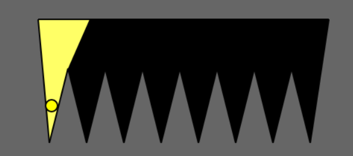
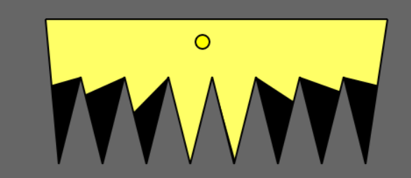
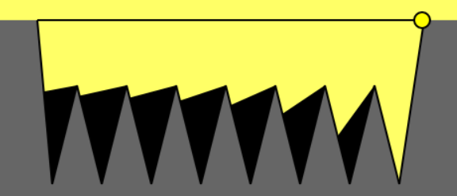
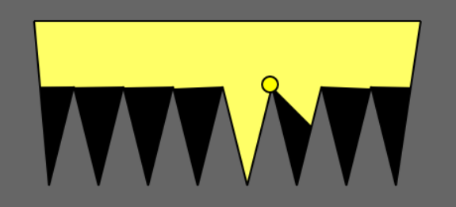
2) Long, dark corridors - A polygon with 100 vertices.
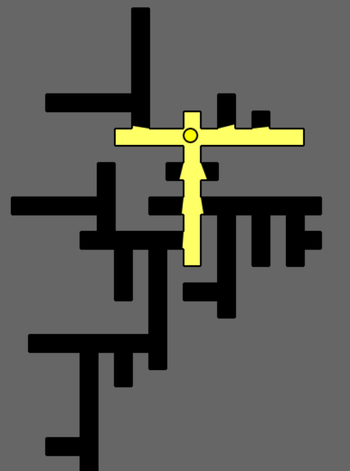
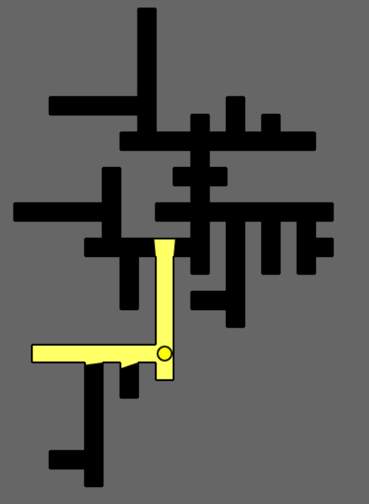
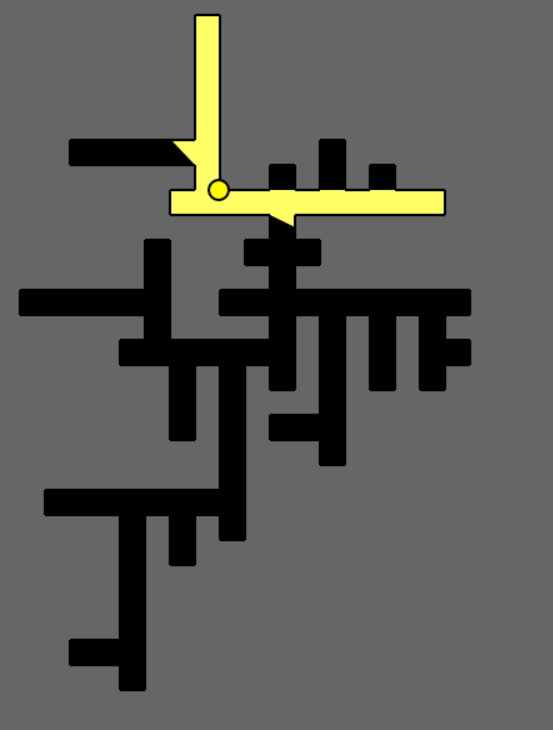
3) Several art galleries - An area with several art galleries, some already shown above, others newly added.
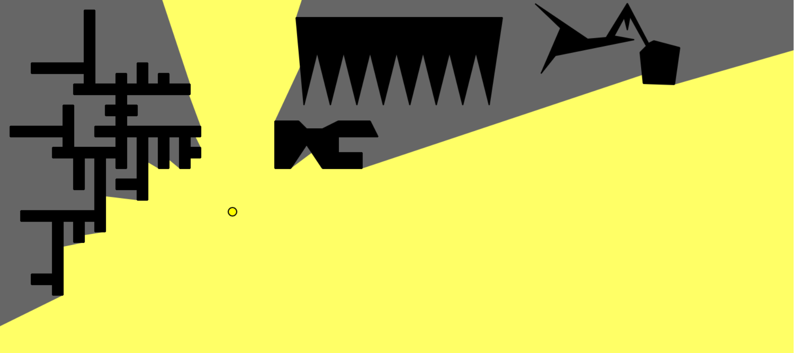
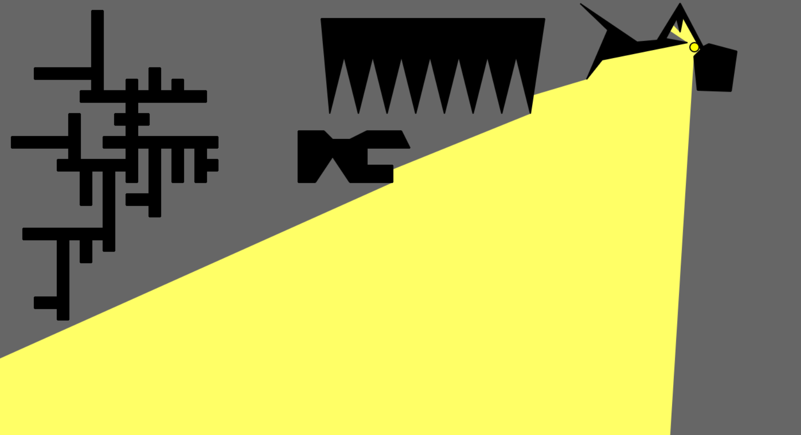
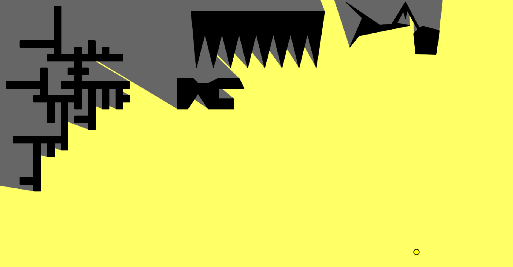
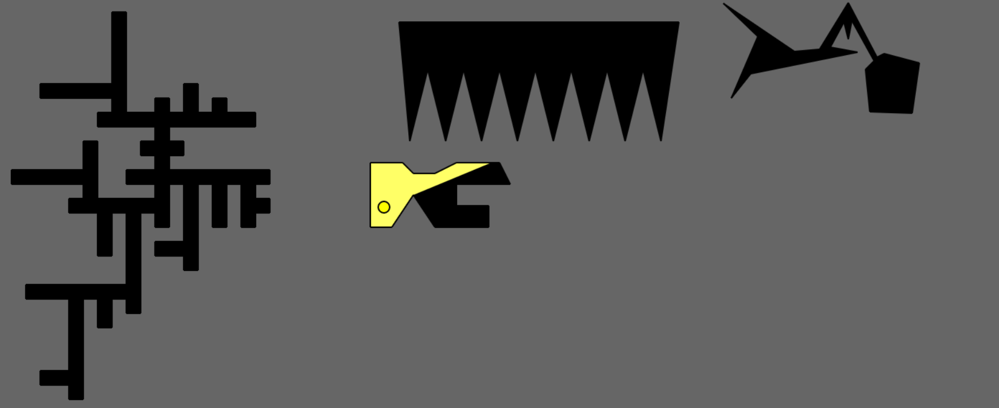
The program was written in Javascript and HTML5 using Canvas.
The Art Gallery Problem
Akshay Sharma, Darshan Kavathe
CSCI 716: Computational Geometry - Professor Reynold Bailey
Problem Overview
The art gallery problem (also called the museum problem) is basically a visibility problem in computational geometry. It is notably included among the open problems in the field which has been attempted by several researchers and practitioners over decades. It is named after the real world problem of securing or illuminating the entire interior of an art gallery (or a museum) using the minimum possible guards (or lights/cameras). The polygons generally considered while solving the problem are simple polygons and a point is usually termed as visible from another if the line joining the two lies completely within the polygon without hitting any obstacles in its path. Our goal is to look at the research that has already been done in this field and attempt to implement some of them while at that same time modifying approaches as we may see fit.
Background
The polygons usually considered part of this problem are all termed ‘simple’. Simple polygons possess the following properties: they enclose a region with a definite, measurable area, their edges meet only at the ends, no more than two edges meet at a vertex and the number of edges present always equals the number of vertices. So, the polygons considered are not necessarily monotone in nature, they may contain inner walls and potentially even obstructions within them commonly termed ‘holes’ in the literature. Originally, Victor Klee had posed this as an open question [1].
Visibility from a point is defined as the area inside the art gallery visible from that point i.e., we can draw a straight line from the point to any other point in that area without crossing the boundaries of polygon.
There are some variations of this problem based on guard placement and type of movement allowed:
Vertex Guards: Guards are placed only at the vertices of the polygon.
Edge Guards: Guards can move along the edges of the polygon.
Point Guards: Guards can be placed anywhere in the polygon.
Stationary Guards: Guards remain in the same position.
Mobile Guards: Guards can move along a path inside the polygon (usually restricted to diagonals or edges).
Hidden Guards: No two guards are visible to each other.
Guarded Guards: Every guard is visible to at least one other guard.
Other terms useful to know:
Colouring: The process of labelling the nodes of a graph using 'colours' such that no adjacent nodes are coloured the same.
3-Colouring: The process of colouring of graph with only 3 colours.
Triangulation: Decomposing a given polygon into triangles by adding daigonals.
General polygon: A non-orthogonal polygon.
Orthogonal polygon: A polygon whose edges are all aligned with pair of orthogonal coordinate axes which could possibly be vertical and horizontal. All internal angles are thus 90 degrees or 270 degrees.
Victor Klee’s question pertained to stationary guards [1]. Chvatal answered by proving that a simple polygon needed at most n/3 guards[1]. Fisk then provided a proof for Chvatal’s result using triangulation and colouring[1]. Avis and Toussaint came up with an algorithm for positioning guards in O(n log n) time[1]. O’Rourke then proved that a simple polygon needed at most n/4 mobile guards[1]. Rourke also went on to prove that simple polygons with holes required at most n+2h/3 vertex guards[1]. Kahn proved that n/4 guards were sufficient for orthogonal polygons[1]. This was done through convex quadrilateralization followed by colouring. Aggarwal then showed that (3n+4)/16 mobile guards sufficed for orthogonal polygons[1]. It has been repeatedly proven that the art gallery problem is an NP hard problem by reducing it to the well known set cover problem.
Proof of NP - Hardness
The set cover problem was one of the original NP complete problems among Karp’s 21 NP complete problem. It refers to the problem of finding the smallest subset of a given set that would be its equivalent. Basically, given a universal set U, and a bunch of subsets s1, s2,..., sn, the optimization version of the problem (which is proven to be NP Hard), requires us to find the most minimal combination of the subsets such that they fully ‘cover’ U or contain all the items in U.
In the art gallery problem, there are analogues to the sets mentioned above. Given the art gallery polygon ‘P’, we first need to partition it into several convex polygons that tend to share vertices known as convex fans. This partitioning can be done by joining pairs of vertices in the polygon and then extending them in both directions till the line hits the outer boundary of the polygon. The polygon resulting from this procedure is termed an ‘Arrangement’ in the literature. Let call this arrangement ‘A’. Every polygon formed due to A is convex in nature. Each of these polygons are known as ‘cells’ in the literature. Each of these cells lies on a ‘fan’ in the polygon. Several such cells may share a fan. Given these conditions, we can reformulate the art gallery problem to have a set S consisting of the convex cells in the arrangement A and the objective is to find the set C which consists of the minimum number of vertices of P that are needed to completely cover S. This can be accomplished by choosing the number of vertices whose fans cover all the cells of A, which constitutes the set cover problem.
The figure on the left below is a popular representation of the set cover problem and the one on the right shows how an art gallery polygon P would need to be partitioned in order to arrive at the optimal solution.


Commonly optimization problems of this nature are solved using a method called Integer Linear Programming (ILP) which optimizes the answer at each of the iterative steps it takes. As we shall see, ILP can also be successfully applied to the art gallery problem to yield optimal solutions.
Known Bounds and Results
These are some proved lower bounds on number of guards in general and orthogonal polygon.
|
Stationary Guards |
Mobile Guards |
| General |
n/3 (Chvatal)[1] |
n/4 (O'Rourke)[1] |
| Orthogonal |
n/4 (Kahn)[1] |
(3n+4)/16 (Aggarwal)[5] |
For a simple polygon with n vertices and h holes, the upper bound is known to be (n+2h)/3 (Hoffmann, Kaufmann, Kriegel 1991 [5]). And in general, the number of mobile guards required to cover a given gallery is only 75% of the number of stationary guards required.
Other than these, Chazelle came up with an O(n3) dynamic algorithm for convex partitioning, using which art gallery problem can be reduced to set cover problem (known to be NP-Hard), but approximation algorithms exist. Ghosh (2010) gave an O(n4) time approximation algorithm for the minimum vertex guard problem. There are some algorithms which use linear integer programming for approximation.
Approach 1: Triangulation and 3-Colouring
True to the first approach proven and tried in the literature, we decided to implement a solution using triangulation and 3-colouring of a given polygon. Obviously we realized that this alone would never give us the optimal solution, but we thought it would be a good starting point from where further augmentations could seriously be thought about. Our solution performs triangulation of input polygons using the line sweep approach so it is divided into two parts: monotone sub-division and polygonal triangulation of the individual polygons.
Monotone sub-division is important for the algorithm to proceed because the triangulation approach assumes that it is dealing with such a polygon and this makes it much easier to do. We first check if the given polygon is already monotone by dividing it into upper and lower chains about the leftmost and rightmost vertices. We then walk along each of these chains to ensure they are always non-decreasing in nature. If this is indeed the case, we can proceed straight to the triangulation portion of the algorithm. If not, we have to perform a left to right sweep across the polygon and attempt to identify the merge and split vertices within the polygon. We add all the vertices of the polygon we encounter into a tree which is ordered by the x value of the vertex. We also maintain the sweep-line using a balanced tree that stores the edges at any point ordered by the y-coordinates. If we encounter multiple line segments emanating from a single point in the polygon, we identify the immediately previous occurring vertex as a split vertex. We use the x-coordinate to search the tree and check which is the previous vertex. We deal with it immediately by adding a diagonal to the polygon by attaching the split vertex with a previous point in the polygon below the uppermost line segment present. If there are multiple such points present in the polygon, we use the point with the highest y coordinate. Before creating this diagonal, we first make sure that the point is visible from the split vertex. A merge vertex can be identified when two line segments in the polygon intersect and yet the polygon is not over yet. In this case, we remember the merge vertex and wait to encounter the next vertex in the polygon which is visible to the merge vertex. When such a vertex is encountered, we add a diagonal attaching the two. These are two types of vertices we can encounter to enable subdivision. They may occur in varying configurations but handling them as mentioned above will ensure several monotone polygons at the end. Because of the need to iterate through all the points in the polygon and having to constantly access a balanced tree data structure, the complexity for this step is: n * log n, so O(n log n).
After this step, we proceed to triangulate each of the polygons that have been created. This is done by sweeping across the polygon from the vertex with the lowest value of x to that with the highest. Since we already have a list of sorted vertices from step 1, we can use the same here. As we sweep across, we check for visibility between vertices and attach them if required while checking to make sure we do not intersect any other diagonals. This happens in a manner suitable for the creation of convex fans in our polygon. The more the number of vertices in the opposite side a particular vertex can ‘see’, the more the diagonals that will be drawn to it. This will come in handy later when we 3-colour our graph since the vertex of the convex fan will remain a single colour and simplify colouring for us. Reflex chains are also identified in this manner and diagonal added. By the end, the algorithm has proceeded through each of the monotone polygons and triangulated them all. Each diagonal can be created in constant time for the purposes of our algorithm. And since each triangulation requires the creation of (n-3) polygons, where n is the number of vertices in each monotone polygon, the overall complexity of this step is: O(n).
In the figures below, the vertices marked in red act as convex fans. They are a meeting point for several diagonals drawn between vertices in the figure.
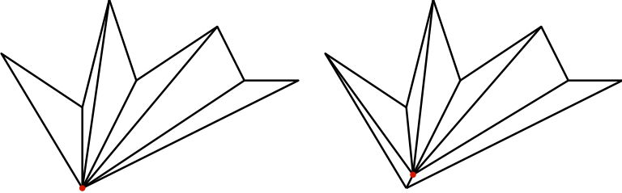
Thus, overall this algorithm has a complexity of: O(n log n). The major portion of it is dominated by the monotone subdivision step.
Some pseudocode which will give more clarity about our approach:
Algorithm for monotonize(P):
Input: A simple polygon P stored as a list of vertices D.
Output: A partitioning of P into monotone sub-polygons, stored in another list E.
1. Construct a priority queue-like structure Q using the vertices of P, using their y-coordinates as priority. If two points have the same y-coordinate, then select the one with the smaller x-coordinate to have higher priority.
2. Initialize an empty binary search tree T.
3. While Q is not empty.
4. Remove the vertex with the highest priority from Q.
5. Handle the vertex, based on its type.
If it is a start vertex,
1. Insert it into T.
Else If it is an end vertex,
1. Check if the there is an unmatched merge vertex.
2. If so, then add a diagonal between the end vertex and the merge vertex.
Else if it is a split vertex,
1. Search in T to find the closest vertex before it that is also visible to it.
2. Once found, add a diagonal between the two vertices.
Else if it is a merge vertex,
1. Remember the merge vertex. Add it to a stack so that it can be popped out when it eventually gets connected to another vertex later on using a diagonal.
Else (it is a regular vertex),
1. Add it to T in the required position.
Algorithm for triangulateMonotonePolygons(P):
Input: A y-monotone polygon P stored in a list D.
Output: A triangulation of P stored in a list E.
1. Iterate across the polygons from left to right.
2. Initialize a stack , and continuously push vertices into it based on whether they are in the upper or lower chain.
3. On each iteration:
4. If vertex 1 and vertex 2 are on different chains,
5. Then Pop all the vertices from S.
6. And then Insert a diagonal from the vertex to each popped vertex, other than the last vertex,
7. Else Pop one vertex from S.
8. Pop the other vertices from S as long as the diagonals lie inside P. Insert these diagonals into D. Push the last vertex that has been popped back onto S. This will complete the process for that polygon.
Figures showing results are below. For each of the figures, the red line segments represent the sides of the art gallery polygon, the green line segments represent the triangulations generated by our algorithm, the yellow, cyan and dark blue vertices are the results of our 3-colouring and the colour with the crosses represent the positions of the guards. Several of the figures have been scaled down in order to fit them into the report but the images can be viewed separately if desired.
1) This is a figure with 150 vertices. The light blue coloured vertices with the crosses in them are the guards.
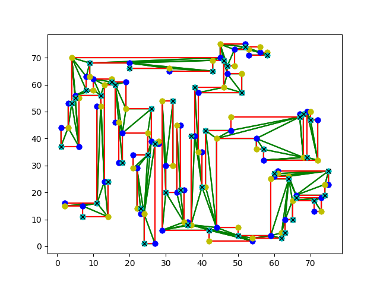
2) This is a figure with 200 vertices. The dark blue vertices show the positions of guards in this structure.
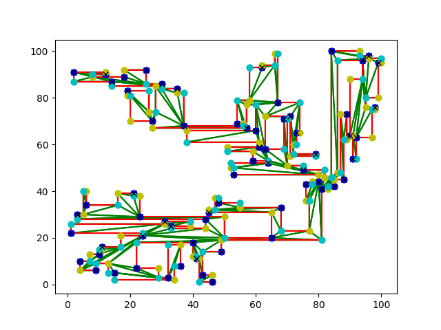
3) This is a figure with 400 vertices. The yellow coloured vertices with the crosses denote the guards.
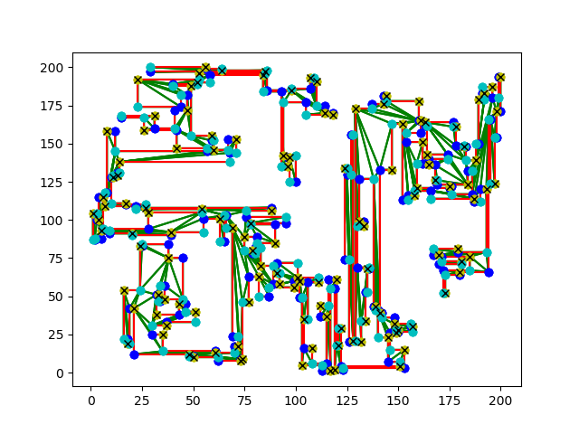
4) This is a von koch figure with 500 vertices. The yellow vertices are the guards.
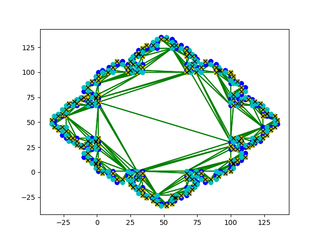
5) This is a polygon representing the interior of the St.Sernin Cathedral in Toulouse, France. The dark blue vertices represent the guards.
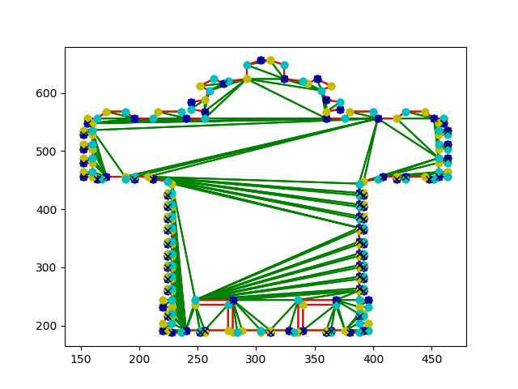
6) This is a simple polygon with 5 vertex guards shown in cyan.
Approach 2: Augmenting using Reflex Vertices
In any convex polygon, it is evident that one guard will be enough to guard it, as all points within the polygon are visible from all other points within it. If there is only one reflex vertex, all the points are still visible from the reflex vertex. This led us to believe, that the type of vertex has a pivotal role in deciding minimum guard points. O’Rourke has proved that placing guard at all reflex vertices is sufficient to cover a given art gallery polygon, but it is not always guaranteed to give a better solution than the existing n/3 lower bound. Justin Iwerks et al. have summarized lower bound for guards in terms of reflex and convex vertices.
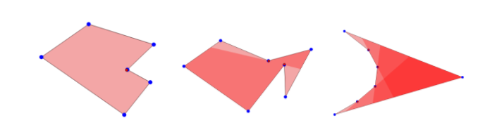
Guards at reflex vertices, better than existing ⌊n/3⌋ lower bound if r ≤ ⌊c/2⌋
r = reflex vertices, c = convex vertices, r + c = n
Number of sufficient guards = 1 If r = 0
= r If r ≤ ⌊c/2⌋
= ⌊n/3⌋ If ⌊c/2⌋ < r < 5c−12
= 2c-4 If r ≥ 5c-12
These lower bound conditions can be used to determine if three coloring method is giving better solution. reflex vertices in a polygon can be identified in O(n) time, using determinant method.
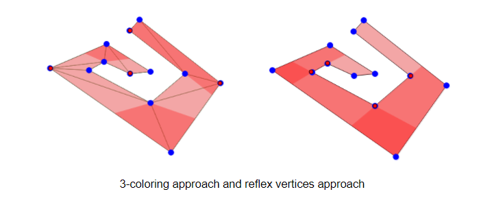
As we can see in above polygon, both approaches do not yield minimum vertex solution, but are sufficient for art gallery coverage problem. More importantly, if r ≤ ⌊c/2⌋, we can find equivalent or more optimal solution than 3 coloring approach in O(n) time.
Approach 3: Augmenting using Visbility Polygons and Overlaps
Since approaches one and two alone don’t guarantee an optimal solution, we turned to the problem of visibility, i.e., calculating the vision of a guard given a set of polygons in a scene. Visibility polygons are a common method to represent the field of visibility of a given point in space. In 2D space, the area enclosed by the visibility polygon would represent all the points on the plane visible to that point. Visibility polygons are commonly used to model visibility in robotics as well as video games so they seemed like a good approach to take in our project.
Naive algorithms to calculate visibility polygons involved uniformly casting rays from the selected point in all possible directions. Clearly, casting rays in all directions from 0 to 359 degrees would have been overkill for an algorithm, not to mention the problems with precision we would have encountered if we attempted to do so. Popularly, this is implemented by casting the rays with at intervals but this can often lead to small obstacles being overlooked. Moreover, his solution may have been theoretically simple to implement but computationally impractical. So we decided to go with a more plausible approach: casting rays to each of the vertices of the objects in the scene. This way, we can clearly figure out which objects are occluded and also, the cost is not too much.
Our implementation knows at all times the locations vertices of the polygons contained within it. So we cast rays to each of them. In order to do so, we start by scanning for vertices from 0 degrees, or a line parallel to the x-axis and then go around till we reach the x-axis again. Each time we encounter a vertex, we add it to our visibility polygon. If another vertex occurs at the same angle with respect to the point but further away, we determine that a portion of the object is occluded and carry on. After we have completed the entire circular scan, we stitch together the visibility polygon and fill in the area of the polygon to clearly denote its extent. Implemented this way, the algorithm takes O(n2) time since we need to check intersections with all n points in the polygon which is an operation on its own.
Instead of just sticking with this approach, we decided to augment it further by storing the object in a balanced tree structure based on angle with respect to the point, and then by distance, so that looking them up would be a constant time operation for any point. Building up the tree takes O(n) time for each guard location being checked. If the guard is dragged around in the interactive application we made, each drag coordinate will regenerate the tree. This could help augment our previous implementation by potentially acting as an index - if that guard location is checked again, we can just use the previously generated treat to create the visibility polygon quickly.
Some pseudocode which will give more clarity about our approach:
Algorithm for vertexRayCast(point, Scene):
Inputs: A point which signifies the position of the guard and the entire Scene in the form of a list of polygons.
Output: A visibility polygon.
VP = {}
for each polygon P in the Scene:
for each vertex V of P:
d = The distance of V from point.
a = angle of V wrt point.
for each other polygon P2 in the Scene:
d = minimum(d, The distance of P2 from point).
Add Vertex with angle a and distance d to VP.
return VP.
Figures showing our results are below:
For all the figures, the yellow circle represents a potential position for a guard, the grey region is outside the polygon, the black region is the unguarded portion inside the gallery, red coloured polygons are obstacles or ‘holes’ within the gallery and the yellow region is the visibility polygon generated for the guard and illustrates the line of sight. For our experiments, we have given the guards 360 degree unbounded vision which is obviously flawed in a real world scenario but suffices for experimental purposes.
1) The figure below shows a block-like shaped polygon with obstacles inside.
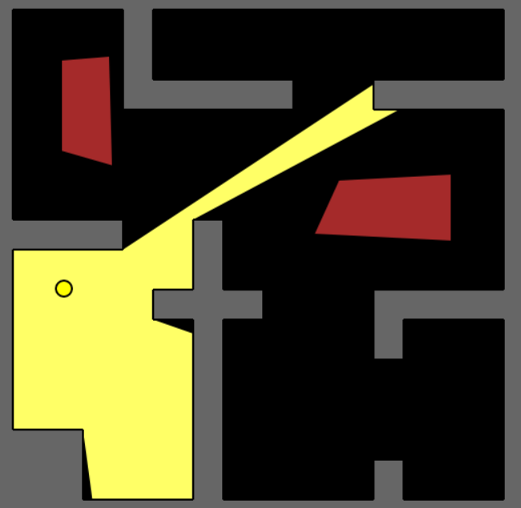
2) The figure below shows a gallery with long, thin corridors.
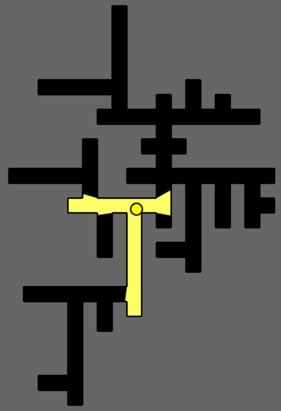
3) The figure below shows a gallery shaped roughly like an X.
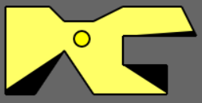
4) The figure below shows a gallery with a crown-like shape, a popular test case for art galleries.
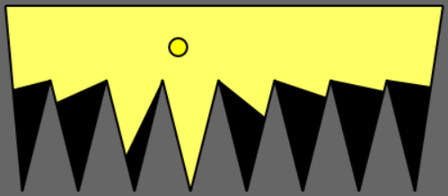
5) The figures below show a gallery with an abnormal shape consisting of a star-like polygon and a pentagon connected with a narrow corridor.
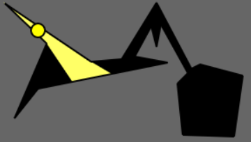
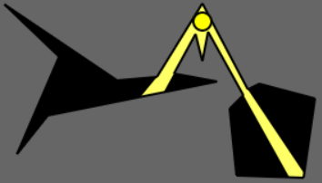
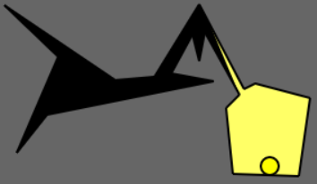
6) This is the overall scene with various configurations of guard(s) placed.
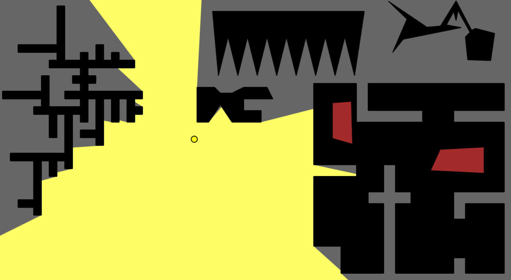
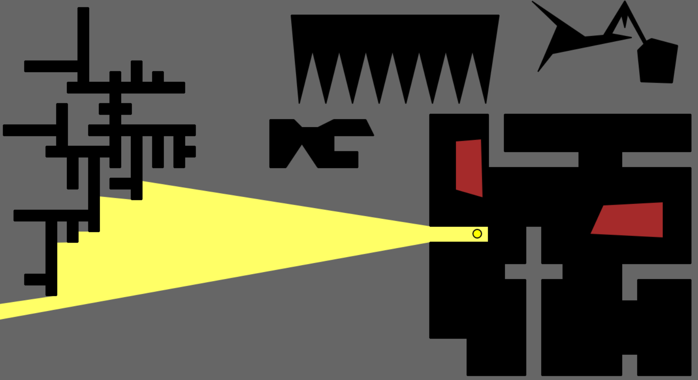
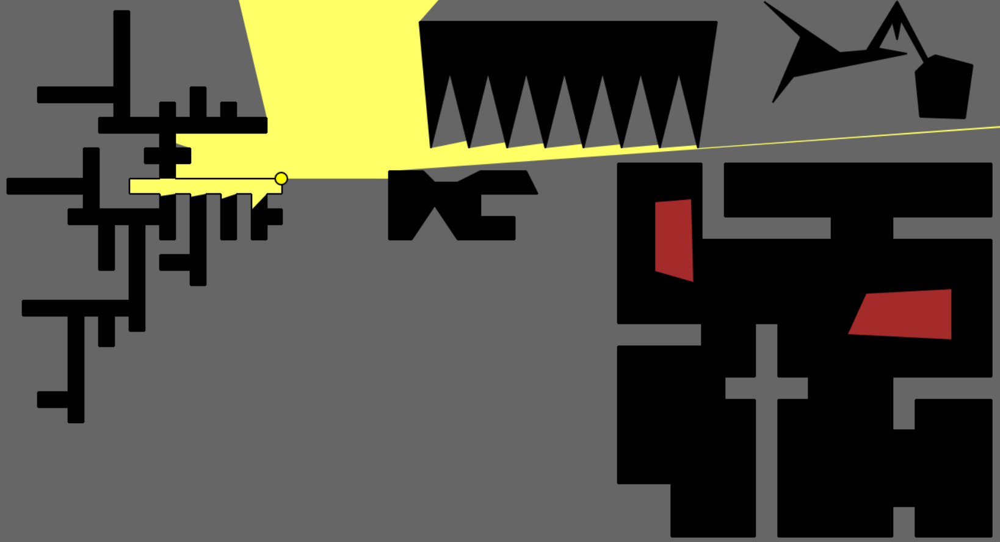
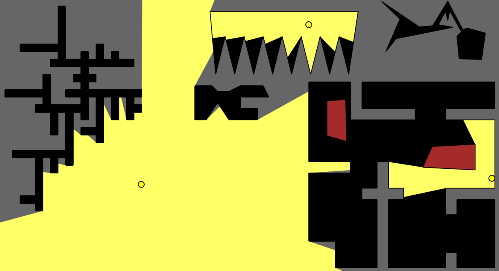
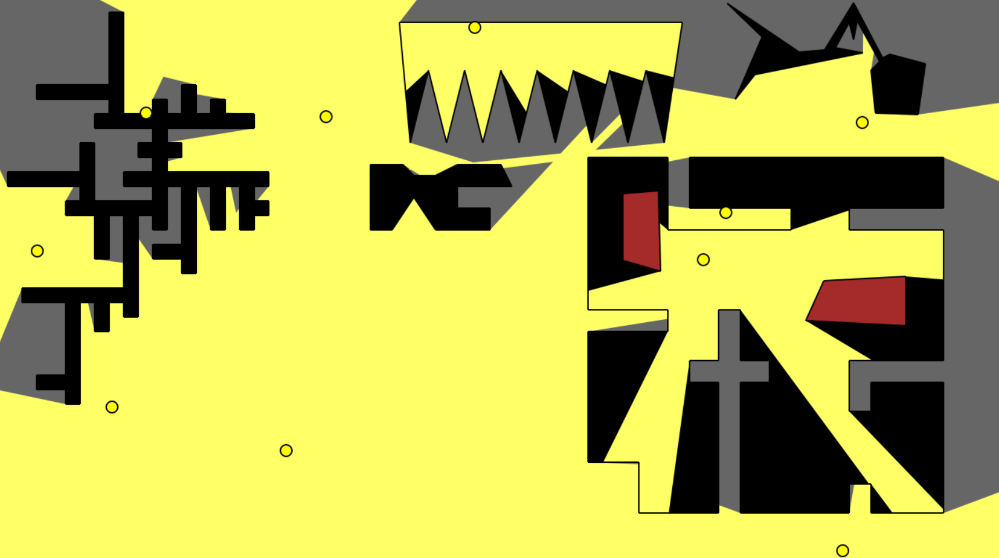
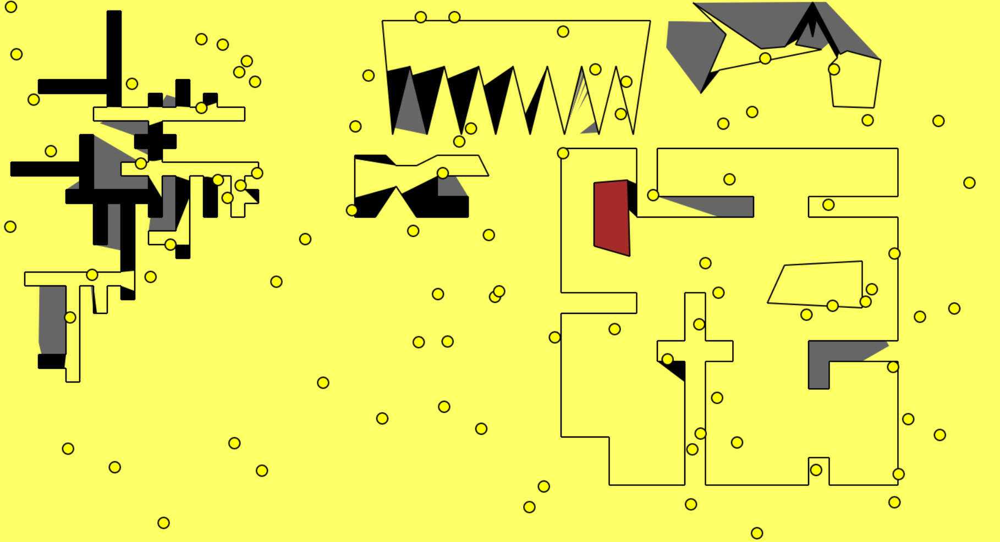
We also attempted to calculate and display the overlap between two visibility polygons. Unfortunately, the library we used to calculate the polygonal intersection turned out to be too slow for our interactive application. It would also slow down drastically if the overlapping area was too large. We were forced to test it only for cases where the overlaps were miniscule. The colour scheme for the results is similar to the above figures but with the added presence of a darker yellow portion outlined in white which represents the intersection polygon of the two guards’ visibility polygons. A few of our results are shown below:
1) The figure below shows two guards inside a polygon that also contains an obstacle (in red). The two visibility polygons share a small corner of overlap.
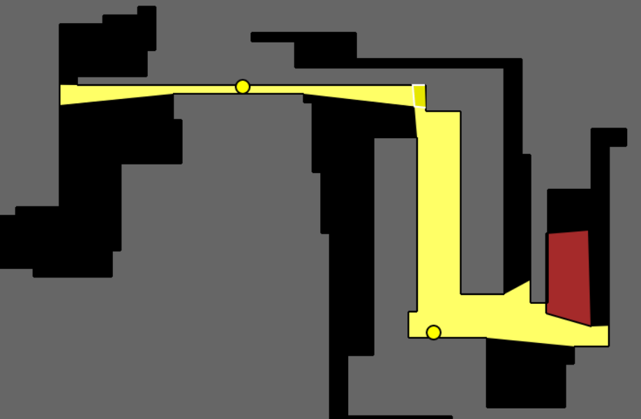
2) The figure below shows two guards outside a polygon with a small quadrilateral overlap for their visibility.
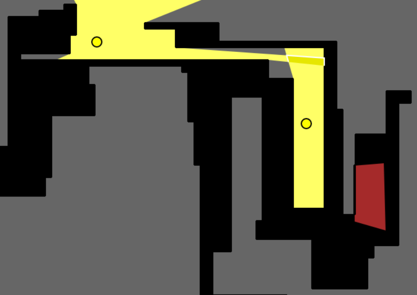
3) The figure below shows two more guards inside a polygon with an almost rhombus shaped overlap in their visibilities.
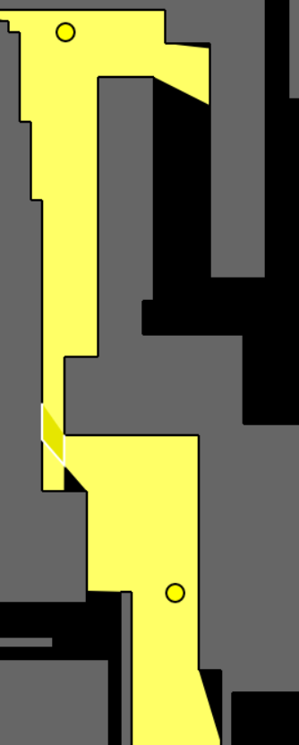
Shortcomings
As can be clearly seen, out approaches are not ideal. Traditionally, triangulation has been the bottleneck for all approaches used to solve the art gallery problem. Initially, the fastest algorithms to do them were O(n log n), which is what we have implemented. Implementing the O(n log log n) approach proved to time consuming and the best known O(n) method was deemed out of reach and convoluted for us. We chose to augment our approach using the reflex vertex approach. We believe this a nice way to segregate and quickly solve those polygons where the number of reflex vertices is less than or equal to half the number of convex ones and can lead to considerable speed ups for those particular cases. Still, if the condition does not hold, triangulation and colouring has to be done. And out approach to doing these are not optimal. The greedy colouring method we have utilized might not be ideal for large polygons. Also, partitioning large and complicated polygons into smaller, monotone polygons can become time consuming. Moreover, using 3-colouring alone for all polygons is not the best approach. This may work for normal polygons but does not produce good results for orthogonal ones. For those, 4-colouring followed by quadrilateralization is the recommended approach. Our solution can give minimal guard positions for some orthogonal polygons but not for all. Ideally, a more complicated technique would need to be employed that can identify the type of polygon being used and then choose an appropriate convex partitioning technique accordingly.
Our reflex approach currently needs to iterate through all the vertices in the polygon to identify if triangulation is required. This could potentially increase computation time if the polygons being considered are gigantic.
Our visibility approach can be used to minimize guards after 3-colouring has been done by checking for guards whose visibility polygons are proper subsets of others’, but this would require computing the overlaps between every possible combination of pairs of guards found earlier in the algorithm, which is again not a computationally simple task. Even if we just want to illustrate the overlaps between the visibility polygons of different sets of guards, the computation is not necessarily fast always.
Also, our method involves several small adjustments to fight the constant war against precision that commonly occurs in geometrical problems. To prevent weird computations from occurring, guards are always placed slightly to the left or right of a vertex leading to awkward results sometimes when the guard should be able to see both inside and outside the art gallery. Visually, this means interior visibility is always fine but exterior visibility is constrained to only one side of the polygon.
Large scenes with several polygons could cause slow downs to polygon computation due to the number of rays needed to be cast for each guard. We tested our implementation with a maximum of 300 vertices totally and experienced not too much slow down but this is guaranteed to appear eventually. Also, adding too many guards to the scene can slow down the overall program since each guard would generate its own visibility polygon that would need to be changeable when dragged.
Challenges
The biggest challenge we faced throughout the project was the sheer amount of material available on the space. Since it is a well studied problem in computational geometry, several people have tried their hand at it. The literature is not always clear regarding which variant of the problem is being written about. Although we decided to concentrate on vertex guards for our approach, there were several papers with suggestions for edge guards, point guards and other variants. And wading through all this material was time consuming to say the least. Also, several papers tried to solve the same problems in very similar ways but with tiny tweaks built in. Since not all the papers talk in explicit terms about the algorithms they used - they tend to mention the approach in more roundabout ways - it took us a while to understand what these subtle differences were and internalize them. We also took a while to understand why different approaches might be required for polygons of different shapes. Initially we were trying to tackle all kinds of polygons with the same generic method. There are also results in the literature that have been derived using relationships between different variants of the art gallery problem. It took us a while to gather several of these and go through them to understand these connections and the conclusions arrived at because of them. Furthermore, several optimal proofs in the literature tend to be quite mathematically dense and convoluted. A stand out in this regard is the Chazelle paper that proves that polygon triangulation can actually be done in linear time. The approach described has been deemed impractical for real world applications because of the sheer amount of work required to achieve the result. Similarly, several of the papers that described the best run times turned out to be beyond our reach. Another constant challenge was dealing with precision in our approaches. We constantly had problem with zero division while finding slopes or determinants. We used epsilon to offset the error in most cases. But as discussed before, it does not necessarily give the best results always. We had to sacrifice some accuracy in order to get functional demos. Finally, as mentioned earlier, we found it hard to gather input polygons for our testing and even when we did find some, they were in different formats that would require pre-processing to be done in order to make them compatible with our code.
Lessons Learned
Knowing what we know today, we would definitely have considered spending more time on the integer linear programming approaches we came across. We did go through the material and attempt to get a demo working but would have required much more time to achieve satisfactory results.
We would also try to look for ways to implement optimal polygon intersection algorithms that could viably work on top of our visibility implementation. We did not have time to implement our own so we ended up experimenting with third party libraries instead, which proved to suffer from their own issues as well as added significant computational cost to an already unideal method overall.
Close to the end of our project, we discovered papers that took different approaches to finding the visibility for a point, some even mention approximate methods that lead to satisfactory results. Common methods mentioned were genetic algorithms and simulated annealing. We believe these methods could give interesting results that are worth looking into.
We learned that investing in creating a random polygon generator early on during the project would have helped in rapid testing of our algorithms on different shapes. We thought we could find a library to do this readily but later failed to do so. This is something that would have greatly enhanced our speed and ability to run tests and generate results quickly.
And finally, reducing our scope as much as possible early on might have helped. That would have led to us reading papers to do with the variants to the problem. The other side of the coin would be that we would not have found some of the important papers we stumbled upon later since it was our constant searching that unearthed papers that explained things in simpler terms as well as exposed us to different approaches.
Possible Future Work
First thing to do would be to combine the visibility polygon approach with the triangulation and reflex approaches. Our triangulation and reflex approaches have been combined in a Python program but visibility currently functions entirely separately as a Javascript program. Since both were developed independently, we did not have the time to combine them yet. Combining them should not require to much effort, the process to generate visibility can directly be appended at the end of the triangulation and colouring process. In order to keep the application interactive, we recommend that Javascript be used for the final solution since interacting with the browser is much easier than having to deal with frameworks like Pygame for Python.
If someone was to start our project today, we recommend that they look more closely into quadrilateralization as well as solution for identifiably orthogonal polygons. Popular approaches seem to be just as computationally expensive as triangulation but the approaches we tried turned out to be much more complicated than expected. There are also more complicated convex partitioning algorithms that attempt to partition polygons in a generic fashion which we did not have the time to look at more closely.
A lot of the more modern methods to tackle the problem in an efficient manner seem to prefer approaching it as more of an optimization problem rather than one to do with geometry. They reduce it to a set cover space and then apply linear integer programming to solve it incrementally. Although we glanced at these methods, we did not attempt them as we chose the visibility approach instead.
For the visibility problem, several methods use approximation techniques with local search variations like simulated annealing and steepest ascent to arrive at the maximum possible visibility polygon in an area within a polygon. Other popular approaches that can be attempted include more sophisticated space partitioning data structures like BSPs to make the visibility computation faster and cheaper.
Our solution for visibility, can very easily be used as a viable component to solve the popular moving guards variant of the art gallery problem. The guards can be animated for a gallery, each movement will generate a new polygon whose overlap with others could be computed. And patrol paths can be arrived at for each guard so as to ensure every point in the gallery remains guarded at every point during the simulation. A machine learning algorithm to optimize for such a situation could be an interesting task. Reinforcement learning to arrive at the best paths seems like a good option. After several runs, the optimal path could be displayed.
We never got to look at guards with visibility constraints. This would only need small tweaks to the algorithm described earlier. We would need to first set a limit for visibility for each guard. If a particular vertex in the scene is found to lie beyond the decided limit, a vertex of the visibility polygon lies exactly at that much distance from the guard. This would complicate guard positioning but make for an interesting exercise along with very different visuals.
Finally, our visibility algorithm is also able to tackle visibility from points outside polygons as shown in some of the results above. This could be used to tackle the exterior visibility variant of the art gallery problem known as the fortress problem in the literature. Triangulation is known to be a viable approach here as well, albeit with the triangulations happening in a different manner instead of interior diagonals. We noticed some precision issues with our implementation that disallowed perfect vision both outside and inside the polygon when a guard is placed exactly at a vertex. The vision is always to one side on the exterior side, so many tweaks might be required if the exterior and interior visibility problem known as the prison yard problem were to be attempted with our technique.
References
-
Joseph O'Rourke. Art Gallery Theorems and Algorithms. (Possibly the best resource available for enthusiasts of problems in this domain).
-
de Rezende P.J., de Souza C.C., Friedrichs S., Hemmer M., Kröller A., Tozoni D.C. (2016). Engineering Art Galleries. In: Kliemann L., Sanders P. (eds) Algorithm Engineering. Lecture Notes in Computer Science, vol 9220. Springer, Cham. Engineering Art Galleries.
-
Urrutia, Jorge. (2000). Art Gallery and Illumination Problems. Handbook of Computational Geometry. 10.1016/B978-044482537-7/50023-1. Art Gallery and Illumination Problems.
-
Lee, D & K. Lin, Arthur. (1986). Computational Complexity of Art Gallery Problems. IEEE Transactions on Information Theory. 32. 276-282. 10.1109/TIT.1986.1057165.
-
Hemanshu Kaul, IIT. The Art Gallery Problem.
-
Purdue University. Art Gallery Theorems and Algorithms.
-
Justin Iwerks, Joseph S. B. Mitchell. The art gallery theorem for simple polygons in terms of the number of reflex and convex vertices.
-
Red Blob Games. Visibility.
-
IIT Delhi. Approximation Algorithms for Art Gallery Problems.
-
Erik Krohn. Survey of Terrain Guarding and Art Gallery Problems.
-
Gorkem Safak. The Art-Gallery Problem: A Survey and an Extension.
-
Oleksandr Goncharov. Javascript library for intersection of polygons.
-
Ernestus, M., Friedrichs, S., Hemmer, M. et al. J Glob Optim (2017) 68: 23. Algorithms for Art Gallery Illumination.
-
Édouard Bonnet, Tillmann Miltzow. An Approximation Algorithm for the Art Gallery Problem.
-
Francisc Bungiu, Michael Hemmer, John Hershberger, Kan Huang, Alexander Kröller. Efficient Computation of Visibility Polygons.
-
Mahdi Moeini , Daniel Schermer , Oliver Wendt. Mobile Guards to Oversee an Art Gallery.
-
Pawel Zylinski. Orthogonal art galleries with holes: a coloring proof of Aggarwal’s Theorem.
-
Bernard Chazelle. Triangulating a Simple Polygon in Linear Time.
-
Bajuelos, António & Canales, Santiago & Hernandez, Gregorio & Martins, Ana. (2008). Optimizing the Minimum Vertex Guard Set on Simple Polygons via a Genetic Algorithm.
-
Computational Geometry - Algorithms and Applications. 3rd Edition.
-
Antonio Leslie Bajuelos Domínguez, Gregorio Hernández Peñalver, Santiago Canales Cano, Ana Mafalda Martins. Minimum vertex guard problem for orthogonal polygons: a genetic approach.
-
Tomás A.P., Bajuelos A.L. (2004). Generating Random Orthogonal Polygons. In: Conejo R., Urretavizcaya M., Pérez-de-la-Cruz JL. (eds) Current Topics in Artificial Intelligence. Lecture Notes in Computer Science, vol 3040. Springer, Berlin, Heidelberg.
-
Joseph O’Rourke, Mandira Virmani. Generating Random Polygons.
-
Wikipedia. The Art Gallery Problem.
-
Wikipedia. Visibility Polygon.
-
Art Gallery Problem Library, by M. C. Couto, P. J. de Rezende and C. C. de Souza. AGPLIB.
-
Stackexchange. Picture of Convex fans.
-
Kumar Ghosh, Subir. (2010). Approximation algorithms for art gallery problems in polygons. Discrete Applied Mathematics. 158. 718-722. 10.1016/j.dam.2009.12.004.